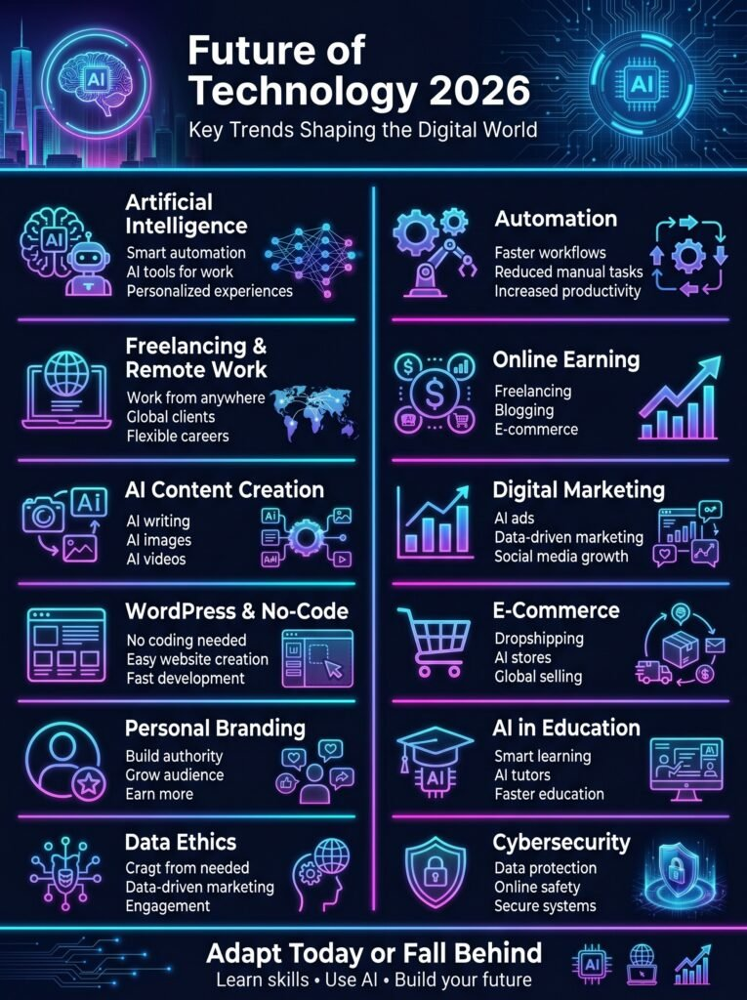
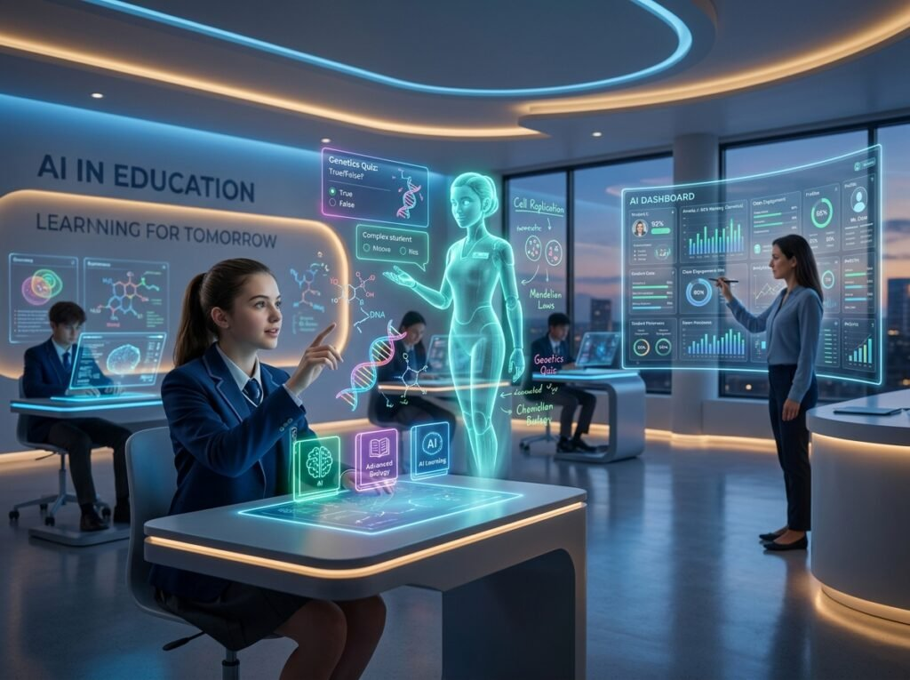

Technology in 2026 is not just improving. It is reshaping how people work, learn, create, sell, communicate, and build income. What used to require large teams, technical skills, and a lot of time can now often be done with smart tools, automation, and AI support.
This is why understanding these trends is no longer optional. Whether you are a student, freelancer, content creator, business owner, or beginner trying to build a future online, these changes can open real opportunities for you.

How Artificial Intelligence is Changing Business and Daily Life
Artificial Intelligence is one of the biggest forces driving the future of technology in 2026. It is no longer limited to research labs or big tech companies. It is now part of everyday life.
In business
AI is helping companies work faster, cheaper, and smarter. Businesses use AI to:
- answer customer questions instantly through chatbots
- analyze large amounts of data in seconds
- predict customer behavior
- personalize product recommendations
- automate emails, reports, and support tasks
- create content for marketing and sales
For example, a small online store can use AI to suggest products to customers based on browsing history. A marketing agency can use AI to generate ad copies, social media captions, and campaign ideas in minutes instead of hours. A service business can use AI chat support to handle repeated customer queries without hiring a large support team.
In daily life
AI is also making life easier for ordinary people. It is now used in:
- smartphones
- voice assistants
- navigation apps
- smart home devices
- translation tools
- personal productivity apps
- learning platforms
For example, someone can ask an AI assistant to summarize a long document, generate an email reply, plan a schedule, or explain a complex topic in simple language. Students can use AI to learn faster. Freelancers can use AI to save time. Entrepreneurs can use AI to make better decisions.
Why this matters
AI is becoming like electricity: invisible, powerful, and everywhere. People who understand how to use AI will work faster, learn faster, and earn faster. Those who ignore it will struggle to keep up.
Key insight: AI is not just a tool. It is becoming the new digital foundation of modern life.
The Real Impact of Automation on Jobs and Productivity
Automation is often misunderstood. Many people think automation only means job loss. In reality, automation is changing the type of work people do.
What automation does
Automation uses software and systems to perform repetitive tasks without manual effort. It can handle:
- data entry
- billing
- scheduling
- email follow-ups
- order tracking
- inventory updates
- reporting
- repetitive customer support tasks
Impact on jobs
Yes, some routine jobs are shrinking. But new jobs are also growing. The real shift is not from “jobs vs no jobs.” It is from “manual repetitive work” to “smart skill-based work.”
For example:
- a person who only does manual copy-pasting may be replaced by automation
- but someone who knows how to manage automation systems becomes more valuable
- businesses now need people who can supervise tools, analyze results, and improve workflows
Impact on productivity
Automation helps people do more in less time. A task that used to take 5 hours might now take 30 minutes. That means:
- higher output
- fewer mistakes
- lower costs
- faster service
- better focus on creative work
For entrepreneurs, this is a huge advantage. A small team can now produce results that once required a large department.
Why this matters
The real winner in the automation era is not the person who works the hardest. It is the person who works the smartest.
Key insight: Automation does not remove human value. It removes wasted time.
Why the Freelancing Future Is Stronger Than Ever
The freelancing future is becoming stronger because companies want flexible, skilled, and affordable talent. In 2026, businesses are no longer limited by location. They can hire people from anywhere in the world.
Why freelancing is growing
There are several reasons:
- remote work is normal
- digital businesses need specialized skills
- companies prefer hiring project-based talent
- online communication tools make collaboration easy
- AI tools help freelancers work faster and better
Popular freelancing services
Freelancers are earning through:
- content writing
- graphic design
- video editing
- social media management
- website development
- SEO
- virtual assistance
- AI prompt writing
- digital marketing
- e-commerce support
Why it is attractive for students and beginners
Freelancing is one of the most practical ways to start online earning because:
- there is low startup cost
- you can start from home
- you can build experience while learning
- income can grow over time
- it creates global opportunities
A student with good communication skills and a useful digital skill can begin with simple projects, build a profile, and gradually attract better-paying clients.
Why this matters
Freelancing is no longer a side option. For many people, it is becoming a main career path.
Key insight: In the digital economy, your skill matters more than your location.
New Ways of Online Earning Using Digital Skills
Online earning has expanded far beyond traditional freelancing. In 2026, digital skills can create multiple income streams.
The most valuable digital skills
Some of the most profitable skills include:
- SEO
- content writing
- video editing
- AI content creation
- social media management
- web design
- WordPress development
- digital ads
- email marketing
- e-commerce management
Online earning methods using these skills
People are earning online through:
- freelancing platforms
- client work
- selling services directly
- selling digital products
- creating online courses
- affiliate marketing
- YouTube content
- blogging
- social media consulting
- AI-assisted service packages
Practical example
A beginner can learn Canva, ChatGPT, and basic video editing. With these three skills, they can offer:
- social media posts
- short video reels
- ad creatives
- captions
- basic brand content
That single skill combination can open multiple income streams.

Why this matters
Online earning is no longer only for experts. With the right digital skill, a beginner can enter the market faster than ever.
Key insight: Digital skills are the new currency of online income.
The Rise of AI-Generated Content: Images, Videos, and Text
AI-generated content is transforming the content world at incredible speed. What once required writers, designers, editors, and production teams can now be supported by AI tools.
AI-generated text
AI writing tools can help with:
- blog posts
- social media captions
- product descriptions
- email campaigns
- ad copy
- scripts
- summaries
- research drafts
This does not mean humans are no longer needed. It means content can be created faster, then refined by humans for quality, emotion, and originality.
AI-generated images
AI image tools are helping users create:
- thumbnails
- social media graphics
- product mockups
- concept art
- advertising visuals
- brand visuals
This is especially useful for small businesses and freelancers who need visual content without hiring a full design team.
AI-generated videos
Video generation tools can now help with:
- animated explainers
- marketing videos
- faceless YouTube content
- short-form social videos
- product demos
Why this matters
AI content creation is lowering the barrier to entry. People with ideas but limited technical skills can now produce professional-looking content.
Key insight: The future of content belongs to creators who combine human creativity with AI speed.
Latest Digital Marketing Trends in the AI Era
Digital marketing in 2026 is smarter, faster, and more personalized than ever before. The days of random posting and guessing are fading. AI is making marketing more strategic.
Major digital marketing trends
- AI-generated ad copy
- personalized content
- automated email sequences
- predictive analytics
- voice search optimization
- short-form video marketing
- chatbot-driven sales funnels
- AI-powered SEO research
- smarter audience targeting
Why AI is changing marketing
AI can analyze customer behavior and help marketers understand:
- what users click
- what content they prefer
- when they are active
- what products they are likely to buy
- which ads perform best
This means businesses can make better decisions based on data instead of guesswork.
Real-world application
A small business can use AI to:
- find trending keywords
- write ad headlines
- generate captions
- test content ideas
- improve customer engagement
A freelancer can use AI to offer complete digital marketing packages more efficiently.
Why this matters
Digital marketing is no longer about posting more. It is about posting smarter.
Key insight: AI is turning marketing into a precision-based growth system.
Opportunities in WordPress, No-Code Tools, and E-Commerce
One of the biggest advantages of 2026 is that building digital businesses has become easier than ever.
WordPress opportunities
WordPress remains one of the most powerful website platforms because it is flexible, scalable, and beginner-friendly. With themes, plugins, and AI support, users can build:
- blogs
- business websites
- landing pages
- portfolios
- e-commerce stores
No-code tools
No-code tools allow users to create websites and apps without deep programming knowledge. This is opening doors for:
- entrepreneurs
- students
- freelancers
- small businesses
- content creators
E-commerce opportunities
E-commerce continues to grow through:
- dropshipping
- print-on-demand
- digital product stores
- subscription models
- AI-assisted product research
- automated customer service
Why this matters
A beginner can now launch an online business without needing a full tech team. A person with a good idea and the right tools can start much faster than in the past.
Key insight: Technology is removing the old barriers to business creation.
How Personal Branding Can Grow Your Income
In 2026, your personal brand can be more valuable than your resume. People buy from people they trust, follow, and remember.
What personal branding means
Personal branding is how you present yourself online. It includes:
- your skills
- your voice
- your content
- your reputation
- your expertise
- your consistency
Why it matters
A strong personal brand can help you:
- attract clients
- get better job opportunities
- build authority
- charge higher rates
- create trust
- grow your audience
Example
Two freelancers may offer the same service. The one with a stronger personal brand, better content, and visible expertise will often win the client.
Platforms for personal branding
- YouTube
- TikTok
- personal blogs
- portfolios
- email newsletters
Why this matters
Your brand helps people understand what you stand for and why they should choose you.
Key insight: In a crowded digital world, trust is the new marketing.
The Role of AI in Education for Students and Teachers

Education is changing rapidly because AI is making learning more personalized and efficient.
For students
AI can help students:
- explain difficult topics
- create study notes
- generate quizzes
- improve writing
- practice languages
- organize revision plans
- summarize books and articles
This can save time and make learning more effective.
For teachers
Teachers can use AI to:
- create lesson plans
- design worksheets
- generate tests
- give feedback faster
- track learning progress
- prepare educational resources
Why this matters
AI is making education more flexible. Students can learn at their own pace. Teachers can focus more on teaching and less on repetitive preparation work.
Key insight: AI is not replacing education. It is making education more personalized and accessible.
Why Cybersecurity Is Now Essential
As technology grows, cyber risks also grow. Every person, business, and student connected online needs cybersecurity awareness.
Why cybersecurity matters
People now store:
- passwords
- bank details
- personal documents
- business data
- client files
- school records
- communication history
This makes digital accounts valuable targets.
Common threats
- phishing attacks
- fake links
- identity theft
- malware
- account hacking
- data leaks
- scam messages
What users should do
- use strong passwords
- enable two-factor authentication
- avoid suspicious links
- update software regularly
- use secure platforms
- protect sensitive data
Why this matters
A person can lose money, data, or reputation in minutes if they are careless online.
Key insight: In the digital era, security is not a technical extra. It is a basic necessity.
Final Perspective
The future of technology in 2026 is full of opportunity, but only for those who are ready to learn and adapt. AI, automation, freelancing, content creation, digital marketing, WordPress, e-commerce, personal branding, education tools, and cybersecurity are not separate trends. They are connected parts of one powerful digital transformation.
The biggest lesson is simple:
Do not wait for the future. Start building for it now.
If you understand these trends early, you can turn them into income, career growth, and long-term success.
FAQs: The Future of Technology in 2026
🗣️ Q: What will technology look like in 2026?
Technology in 2026 will be highly advanced, with artificial intelligence, automation, and smart systems becoming part of everyday life. People will rely more on digital tools for work, learning, and earning online.
🗣️ Q: How can I earn money online in 2026?
You can earn money online in 2026 by learning digital skills like content creation, freelancing, digital marketing, or e-commerce. Using AI tools can help you work faster and increase your income.
🗣️ Q: Is AI replacing jobs in the future?
AI is not completely replacing jobs, but it is changing the type of work people do. It is replacing repetitive tasks while creating new opportunities in creative and technical fields.
🗣️ Q: What skills are important for the future?
Important skills for the future include AI tools usage, communication, digital marketing, content creation, and problem-solving skills.
🗣️ Q: Can students start freelancing?
Yes, students can start freelancing by learning a simple digital skill and offering services online. It is one of the easiest ways to gain experience and earn money.